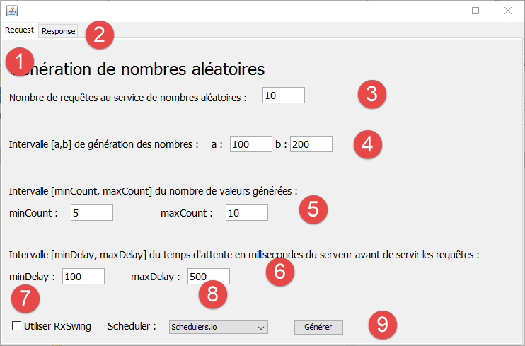
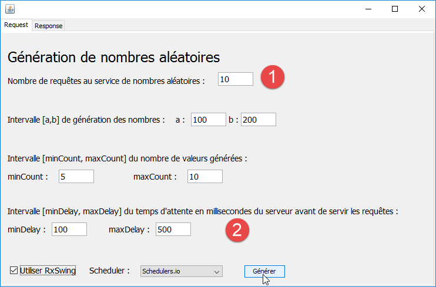
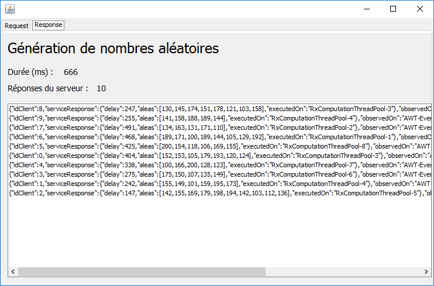
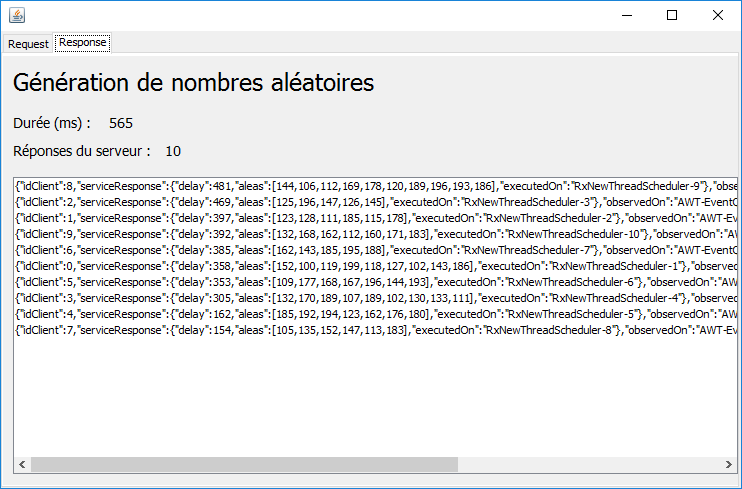
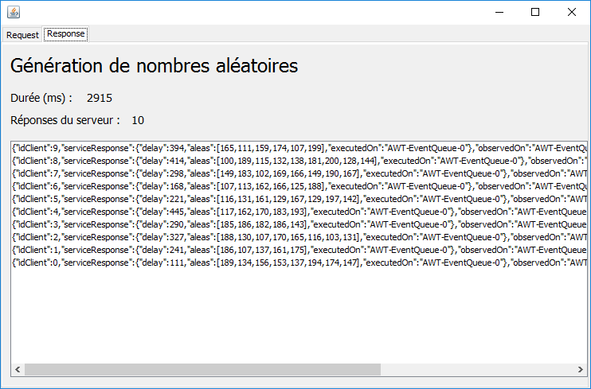
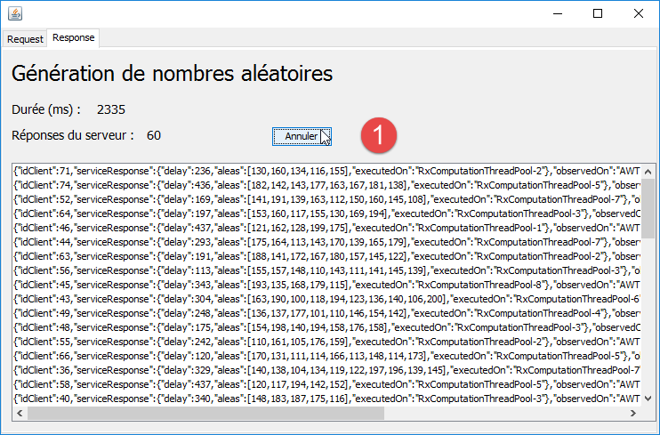
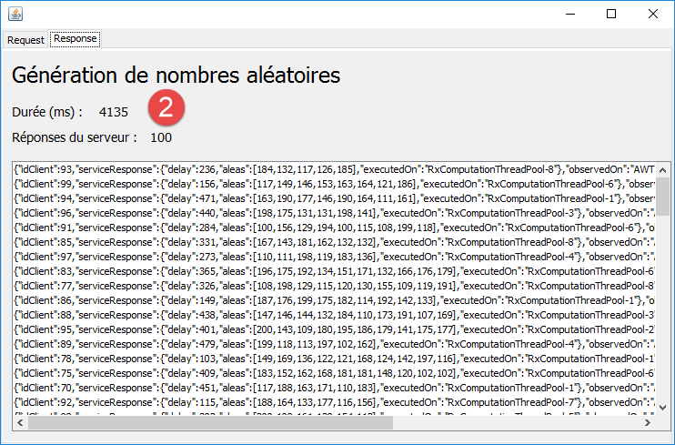
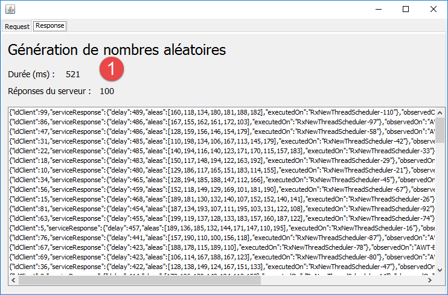
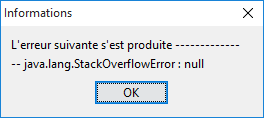

2. Ein Beispiel zur Einführung
Meine ersten Berührungen mit RxJava erfolgten über Kurse und Tutorials, die ich im Internet gefunden habe. Abgesehen davon, dass die Theorie Konzepte verwendete, an die ich nicht gewöhnt war und die ich nur schwer verstehen konnte, war mir vor allem nicht klar, wozu das im wirklichen Leben gut sein könnte. Wir werden daher zunächst ein (hoffentlich einfaches) Beispiel vorstellen, bei dem der Einsatz von RxJava zu einer echten Vereinfachung des Codeschreibens führt, und auf dieser Grundlage werden wir versuchen, die wichtigen Elemente dieser Bibliothek herauszuarbeiten.
Die Bibliothek RxJava basiert auf folgendem Konzept: Ein Strom von Elementen vom Typ T Observable<T> wird von einem oder mehreren Abonnenten (Subscriber<T>) beobachtet. Die Bibliothek RxJava ermöglicht es, dass der Observable<T>-Strom in einem Thread T1 und sein Beobachter Subscriber<T> in einem Thread T2 ausgeführt werden, ohne dass sich der Entwicklersich um die Verwaltung des Lebenszyklus dieser Threads und um naturgemäß schwierige Probleme wie den Datenaustausch zwischen Threads und deren Synchronisation zur Ausführung einer übergreifenden Aufgabe kümmern muss. Sie erleichtert somit die asynchrone Programmierung.
Ein Observable<T>-Stream erzeugt Elemente vom Typ T, die nach und nach beobachtet werden können, sobald sie erzeugt werden. Befinden sich der Beobachter und das Observable (wobei der Typ Observable<T> hier im weiteren Sinne verwendet wird) im selben Thread, so kann das Observable das Element (i+1) erst dann erzeugen, wenn der Beobachter das Element i verarbeitet hat. Es gibt nur wenige Fälle, in denen diese Architektur von Interesse ist. Befinden sich der Beobachter und das Observable nicht im selben Thread, verhalten sich das Observable und sein Beobachter unabhängig voneinander: Das Observable erzeugt Elemente in seinem eigenen Tempo und der Beobachter verarbeitet sie in seinem eigenen Tempo. Genau darin liegt der Vorteil der Bibliothek. Bislang haben wir immer von einem Beobachter gesprochen. Tatsächlich kann ein Observable jedoch eine beliebige Anzahl von Beobachtern haben.
2.1. Die Architektur der Beispielanwendung
Die Beispielanwendung weist folgende Architektur auf:

- In [1] liefert eine Service-Schicht Listen mit Zufallszahlen. Diese Schicht wird im selben Thread ausgeführt wie die Methode [swing], die sie nutzt. Sie liefert ihre Zahlen somit synchron;
- In [2] ermöglicht eine mit RxJava implementierte schlanke Anpassungsschicht, der Schicht [swing] eine asynchrone Implementierung desselben Dienstes bereitzustellen: Dieser kann in einem anderen Thread ausgeführt werden als die Methode [swing], die ihn nutzt;
- der Aufruf von [4] ist synchron, während der Aufruf von [5-6] asynchron ist;
Was wir hier zeigen möchten, ist, dass sich mit der Rx-Bibliothek eine synchrone Schnittstelle problemlos in eine asynchrone umwandeln lässt. Warum ist das nützlich? Die Ereignisse einer Swing-Schnittstelle werden in einem Thread verarbeitet, der gemeinhin als „Event Loop“ bezeichnet wird. Die Ereignisse werden in einer Warteschlange eingereiht und nacheinander abgearbeitet. Das Ereignis Ei+1 kann erst verarbeitet werden, wenn das vorhergehende Ereignis Ei vollständig verarbeitet wurde. Es ist daher wichtig, dass die Verarbeitung eines Ereignisses so kurz wie möglich ist, damit die grafische Benutzeroberfläche reaktionsfähig bleibt. Manchmal kann die Verarbeitung eines Ereignisses viel Zeit in Anspruch nehmen. Dies ist der Fall, wenn diese Verarbeitung Netzwerkzugriffe beinhaltet. Wenn man vermeiden will, dass die grafische Benutzeroberfläche in einer für den Benutzer inakzeptablen Weise einfriert, müssen diese Netzwerkzugriffe in von der Ereignisschleife getrennten Threads erfolgen, um diese zu entlasten. Damit betritt man den Bereich der parallelen Programmierung (mehrere Threads laufen parallel), der zu Recht als schwierig gilt. Die Rx-Bibliothek bietet eine einfache und elegante Lösung für dieses Problem.
Um langwierige Verarbeitungsprozesse zu simulieren, gibt der Dienst im Beispiel seine Zufallszahlen erst nach einer bestimmten Wartezeit aus, damit man das Verhalten der grafischen Benutzeroberfläche beobachten kann.
2.2. L'exécutable
Die ausführbare Datei der Beispielanwendung befindet sich im Ordner [dvp/executables] der Beispiele:
 |  |
Je nach Konfiguration des Computers, auf dem das Archiv [swing-01] ausgeführt wird, gibt es verschiedene Möglichkeiten, dies zu tun. Man kann beispielsweise die Vorgehensweise [1-3] befolgen. Daraufhin erscheint die folgende grafische Benutzeroberfläche:
 |
- Die Oberfläche enthält zwei Registerkarten: [1-2], eine für die Abfrage des Zufallszahlengenerators ([Request]) und eine für die Anzeige der empfangenen Zahlen ([Response]);
- In [3] wird angegeben, wie viele Anfragen an den Dienst gestellt werden sollen;
- in [4] wird das gewünschte Intervall [a,b] für die Zahlengenerierung angegeben;
- in [5] wird die Anzahl der vom Dienst zurückgegebenen Werte durch eine Zufallszahl im vom Benutzer festgelegten Intervall [minCount, maxCount] bestimmt;
- In [6] wartet der Dienst, bevor er seine Antwort zurücksendet, delay Millisekunden, wobei delay eine Zufallszahl im vom Benutzer festgelegten Intervall [minDelay, maxDelay] ist;
- Standardmäßig wendet sich die Schicht [swing] an die synchrone Schnittstelle des Dienstes. Um die asynchrone Schicht anzusprechen, muss der Benutzer [7] aktivieren. In diesem Fall wird der Generierungsdienst in Threads ausgeführt, die von der Event-Loop der grafischen Benutzeroberfläche getrennt sind. Die Rx-Bibliothek verfügt über verschiedene Strategien zur Erzeugung dieser Threads. Der Benutzer kann seine Strategie unter [8] auswählen;
- die Generierung der Zahlen erfolgt über die Schaltfläche „[9]“;
 |
- in [10], Anzeige der Ergebnisse. Wir werden deren Struktur erläutern;
- in [11] die Anzahl der erhaltenen Ergebnisse;
- in [12] die Ausführungsdauer in Millisekunden;
- in [13] hat der Benutzer die Möglichkeit, die Ausführung abzubrechen;
Jedes Ergebnis hat folgende Form:
{"idClient":0,"serviceResponse":{"delay":412,"aleas":[146,115,128,174,159,112,162,127],"executedOn":"RxComputationThreadPool-6"},"observedOn":"AWT-EventQueue-0","requestAt":"02:42:47:708","responseAt":"02:42:52:931"}
- [idClient]: die Nummer der Anfrage. Es sei daran erinnert, dass mehrere Anfragen an den Generierungsdienst gestellt werden;
- [delay]: die Wartezeit in Millisekunden, die der Dienst verzeichnet hat, bevor er sein Ergebnis gesendet hat;
- [aleas]: die vom Dienst zurückgegebenen Zufallszahlen;
- [executedOn]: der Name des Threads, in dem der Dienst ausgeführt wurde;
- [observedOn]: der Name des Threads, der das Ergebnis angezeigt hat. Bei einer Swing-Oberfläche kann dies nur der Thread der Event-Loop sein, hier [AWT-EventQueue-0];
- [requestAt]: der Zeitpunkt der Anfrage im Format [heures:minutes:secondes:millisecondes];
- [responseAt]: der Zeitpunkt des Erhalts der Ergebnisse in derselben Form;
Wir werden nun die Codeabschnitte vorstellen, die zum Verständnis des Beispiels nützlich sind.
2.3. Die synchrone Schnittstelle
Die Service-Schicht [1] weist folgende Schnittstelle auf:
public interface IService {
// Zufallszahlen in [a,b]
// n Zahlen werden mit n Zufallszahlen im Intervall [minCount, maxCount] generiert
// Die Zahlen werden nach einer Wartezeit von delay Millisekunden generiert,
// wobei [delay] eine Zufallszahl im Intervall [minDelay, maxDelay] ist
public ServiceResponse getAleas(int a, int b, int minCount, int maxCount, int minDelay, int maxDelay);
}
Die Antwort [ServiceResponse] lautet wie folgt:
public class ServiceResponse {
// Wartezeit des Dienstes
private int delay;
// Zufallszahlen
private List<Integer> aleas;
// Ausführungsthread
private String executedOn;
// Konstruktoren
public ServiceResponse(int delay, List<Integer> aleas) {
executedOn = Thread.currentThread().getName();
this.delay = delay;
this.aleas = aleas;
}
// Getter und Setter
...
}
Die Antwort besteht aus drei Elementen:
- Zeile 6: die generierten Zufallszahlen;
- Zeile 4: die Wartezeit, die der Dienst einhält, bevor er sein Ergebnis zurückgibt;
- Zeile 8: der Ausführungs-Thread des Dienstes;
2.4. Der synchrone Aufruf
Wir gehen nun näher auf den synchronen Aufruf [4] ein, den die Schicht [swing] an den Dienst [1] sendet:
private void doGenerateWithService() {
// Wartebeginn
beginWaiting();
try {
for (int i = 0; i < nbRequests; i++) {
UiResponse uiResponse = new UiResponse();
uiResponse.setIdClient(i);
uiResponse.setServiceResponse(service.getAleas(a, b, minCount, maxCount, minDelay, maxDelay));
uiResponse.setResponseAt();
model.add(0, jsonMapper.writeValueAsString(uiResponse));
jLabelNbReponses.setText(String.valueOf(Integer.parseInt(jLabelNbReponses.getText()) + 1));
}
} catch (JsonProcessingException | RuntimeException e) {
System.out.println(e);
}
// Warteende
endWaiting();
}
- Zeilen 5–12: Die Schleife zur Ausführung der vom Benutzer angeforderten [nbRequests]-Anfragen;
- Zeile 8: [service] ist die Implementierung der in Abschnitt 2.3 vorgestellten synchronen Schnittstelle [IService];
- Zeile 10: [model] ist das von der Komponente JList auf der Registerkarte [Response] angezeigte Modell. Die Elemente dieser Vorlage sind die Zeichenfolgen jSON der folgenden Elemente vom Typ [UiResponse]:
public class UiResponse {
// Kunden-ID
private int idClient;
// Antwort des Dienstes
private ServiceResponse serviceResponse;
// Name des Beobachtungs-Threads
private String observedOn;
// Zeitpunkt der Anfrage
private String requestAt;
// Zeitpunkt der Antwort
private String responseAt;
// Konstruktoren
public UiResponse() {
observedOn = Thread.currentThread().getName();
requestAt = getTimeStamp();
}
// private Methoden
private String getTimeStamp() {
return new SimpleDateFormat("hh:mm:ss:SSS").format(Calendar.getInstance().getTime());
}
// Getter und Setter
...
}
- Zeile 6: die Antwort des Zufallszahlengenerators;
- Zeile 4: die Nummer der Anfrage, auf die geantwortet wird;
- Zeile 8: der Thread, in dem diese Antwort angezeigt wird. Wie bereits erwähnt, handelt es sich dabei immer um den Thread der Event-Loop;
- Zeilen 10 und 12: der Zeitpunkt der Anfrage und der Antwort;
2.5. Tests der synchronen Aufrufe
Wir führen die folgende Konfiguration aus:
 |
Auf der Registerkarte [Response] erhalten wir folgende Ergebnisse:
 |
- In [1-2] wurden tatsächlich 10 Antworten erhalten, wie angefordert. Sie wurden in der Reihenfolge ihres Eintreffens an erster Stelle eingefügt. Man sieht, dass sie in der Reihenfolge der Anfragen erhalten wurden;
- sie wurden alle im Thread der Event-Loop [AWT-EventQueue-0] ausgeführt und angezeigt. Die Abfragen wurden also nacheinander in diesem Thread ausgeführt. Es gab keine gleichzeitigen Abfragen;
- Was hier nicht sichtbar ist: Während der Ausführung ist die grafische Benutzeroberfläche eingefroren. Es gibt beispielsweise keine Möglichkeit, auf die Registerkarte [Response] zuzugreifen, um die eintreffenden Antworten zu sehen, oder die Ausführung mit der Schaltfläche [Annuler] zu unterbrechen. Selbst wenn diese Schaltfläche auf der Registerkarte „[Request]“ vorhanden gewesen wäre, wäre sie unbrauchbar gewesen. Denn dann gäbe es zwei Ereignisse:
- der Klick auf die Schaltfläche „[Générer]“;
- der Klick auf die Schaltfläche [Annuler];
Der Klick auf die Schaltfläche [Annuler] wird erst nach Abschluss des Vorgangs verarbeitet, der durch den Klick auf die Schaltfläche [Générer] ausgelöst wurde. Wir haben gerade gesehen, dass dieser Vorgang den Thread der Event-Loop während der gesamten Ausführungszeit belegt hat und dadurch die Verarbeitung des Klicks auf die Schaltfläche [Annuler] verhindert hat. Dies ist typischerweise die Art von Situation, in der Rx eine deutliche Verbesserung bewirken kann;
2.6. Die asynchrone Schnittstelle und ihre Implementierung
Wir wenden uns nun der Schnittstelle der Schicht [2] sowie ihrer Implementierung mit Rx zu. Diese wird nicht auf Anhieb verständlich sein. Wir möchten lediglich die Einfachheit des Codes dieser Implementierung hervorheben.
Die asynchrone Schnittstelle lautet wie folgt:
public interface IRxService {
// Zufallszahlen in [a,b]
// n Zahlen werden mit n Zufallszahlen im Intervall [minCount, maxCount] generiert
// Die Zahlen werden nach einer Wartezeit von delay Millisekunden generiert,
// wobei [delay] eine Zufallszahl im Intervall [minDelay, maxDelay] ist
public Observable<UiResponse> getAleas(int a, int b, int minCount, int maxCount, int minDelay, int maxDelay, UiResponse uiResponse);
}
Die Unterschiede zur in Abschnitt 2.3 vorgestellten synchronen Schnittstelle sind folgende:
- Die in Abschnitt 2.3 vorgestellte Klasse [UiResponse] ist nun Teil der Parameter der Methode [getAleas] (Zeile 6). Der Grund dafür ist, dass die Anfragen nun parallel ausgeführt werden und der Dienst eine zufällige Zeit abwartet, bevor er sein Ergebnis zurückgibt, sodass die Antworten nicht in der Reihenfolge der Anfragen zurückkommen. Daher übergeben wir das Objekt [UiResponse], das unter anderem die Nummer der Anfrage enthält:
// ID des Kunden (Anfrage)
private int idClient;
// Antwort des Dienstes
private ServiceResponse serviceResponse;
// Name des Beobachtungs-Threads
private String observedOn;
// Zeitpunkt der Anfrage
private String requestAt;
// Zeitpunkt der Antwort
private String responseAt;
- Der Typ der Antwort des asynchronen Dienstes ist ein Typ [Observable<UiResponse>]. Der Typ [Observable<>] wird von der Rx-Bibliothek bereitgestellt. Das Ergebnis vom Typ „[Observable<UiResponse>]“ zeigt an, dass die Methode „[getAleas]“ einen Strom von Werten vom Typ „[UiResponse]“ liefert, die einzeln an ihren Beobachter weitergeleitet (gepusht) werden;
Sehen wir uns nun die Implementierung dieser Schnittstelle an:
public class RxService implements IRxService {
// Dienst
private IService service;
// Hersteller
public RxService(IService service) {
this.service = service;
}
@Override
public Observable<UiResponse> getAleas(int a, int b, int minCount, int maxCount, int minDelay, int maxDelay, UiResponse uiResponse) {
return Observable.create(subscriber -> {
try {
uiResponse.setServiceResponse(service.getAleas(a, b, minCount, maxCount, minDelay, maxDelay));
subscriber.onNext(uiResponse);
} catch (Exception e) {
subscriber.onError(e);
} finally {
subscriber.onCompleted();
}
});
}
}
- Zeilen 7–9: Dem Konstruktor wird eine Referenz auf die synchrone Schnittstelle [IService] übergeben. Diese übernimmt die Generierung der Zufallszahlen;
- Das von der Methode [getAleas] zurückgegebene Observable wird durch die statische Methode [Observable.create] erstellt. Diese Methode ermöglicht es, aus einer synchronen Implementierung eine asynchrone Implementierung zu erstellen;
- Zeile 13: Der Parameter der statischen Methode [Observable.create] ist hier eine Lambda-Funktion, die als Parameter einen Typ [Subscriber] erhält, bei dem es sich wiederum um einen Rx-Typ handelt. Ein [Subscriber] ist ein Objekt, das einen Strom von Observables abonniert, d. h. einen Strom von asynchron gelieferten Daten. Hier werden drei Methoden dieses Abonnenten verwendet:
- [Subscriber.onNext], um ihm einen Wert zu übermitteln (Zeile 16);
- [Subscriber.onError], um ihm eine Ausnahme zu übermitteln (Zeile 18);
- [Subscriber.onCompleted], um dem Abonnenten mitzuteilen, dass der Datenstrom beendet ist (Zeile 20);
Es kann mehrere Abonnenten für dasselbe Observable geben. Hier haben wir nur einen Abonnenten, der einen Datenstrom mit einem einzigen Datenelement abonniert, nämlich das in den Zeilen 15–16 erzeugte. Das Datenelement wird von der synchronen Implementierung des Dienstes erzeugt (Zeile 15) und an den Abonnenten übermittelt (Zeile 16).
Auch wenn das alles wahrscheinlich noch etwas undurchsichtig ist, kann man doch nur beeindruckt sein von der extremen Prägnanz dieser asynchronen Implementierung des Dienstes.
2.7. Der asynchrone Aufruf
Wir gehen nun näher auf den synchronen Aufruf [5] ein, den die Schicht [swing] an den Dienst [2] sendet:
private void doGenerateWithRxService() {
// Wartebeginn
beginWaiting();
// Zufallszahlen werden angefordert
Observable<UiResponse> observables = Observable.empty();
for (int i = 0; i < nbRequests; i++) {
UiResponse uiResponse = new UiResponse();
uiResponse.setIdClient(i);
// Scheduler
int schedulerIndex = jComboBoxSchedulers.getSelectedIndex();
switch (schedulerIndex) {
case 0:
observables = observables.mergeWith(rxService.getAleas(a, b, minCount, maxCount, minDelay, maxDelay, uiResponse).subscribeOn(Schedulers.io()));
break;
...
}
}
...
}
- Zeilen 6–10: Ausführung der vom Benutzer angeforderten [nbRequests]-Abfragen;
- Zeilen 7–8: Vorbereitung des Objekts [UiResponse], das die Methode [getAleas] des asynchronen Dienstes (Zeile 13) benötigt. Dabei geht es hauptsächlich darum, die Nummer [idClient] der Anfrage zu speichern;
- Zeile 13: Die Methode [getAleas] des asynchronen Dienstes wird aufgerufen. Sie gibt ein Objekt [Observable<UiResponse>] zurück. Dieser Aufruf ruft den synchronen Dienst noch nicht auf. Kehren wir zum Code des asynchronen [getAleas] zurück:
@Override
public Observable<UiResponse> getAleas(int a, int b, int minCount, int maxCount, int minDelay, int maxDelay, UiResponse uiResponse) {
return Observable.create(subscriber -> {
try {
uiResponse.setServiceResponse(service.getAleas(a, b, minCount, maxCount, minDelay, maxDelay));
subscriber.onNext(uiResponse);
} catch (Exception e) {
subscriber.onError(e);
} finally {
subscriber.onCompleted();
}
});
}
Der Code in den Zeilen 4–11, der den synchronen Dienst aufruft, wird erst ausgeführt, wenn sich ein Abonnent anmeldet. Solange es keine Abonnenten gibt, wird dieser Code nicht ausgeführt.
Kehren wir zum Code der Methode [doGenerateWithRxService] zurück:
- Zeile 5: Es wird ein leeres Observable erstellt (es wird nichts beobachtet);
- Zeile 13: Es wird ein Observable erstellt, dessen Stream die Zusammenführung der asynchronen Streams [nbRequests] ist, die den Anfragen [nbRequests] zugeordnet sind. Dies wird mit der Methode [Observable.mergeWith] erreicht, die es ermöglicht, zwei asynchrone Streams zusammenzuführen. In der Rx-Terminologie wird [mergeWith] als Stream-Operator bezeichnet. Diese Operatoren zeichnen sich dadurch aus, dass das Ergebnis der Operation meist wiederum ein [Observable] ist. Letztendlich bezeichnet die Variable [observables] nach Zeile 17 einen einzigen Stream, der aus den asynchronen Antworten [nbRequests] des asynchronen Dienstes besteht;
- Zeile 13: Der Zusammenführungsvorgang hätte wie folgt geschrieben werden können:
observables = observables.mergeWith(rxService.getAleas(a, b, minCount, maxCount, minDelay, maxDelay, uiResponse));
aber wir haben geschrieben:
observables = observables.mergeWith(rxService.getAleas(a, b, minCount, maxCount, minDelay, maxDelay, uiResponse).subscribeOn(Schedulers.io()));
Wir haben hier den Operator [subscribeOn] auf das Observable [rxService.getAleas] angewendet. Wie so oft ist das Ergebnis wiederum ein Observable. Mit dem Operator [subscribeOn] lässt sich festlegen, dass die Beobachtbare in einem Thread ausgeführt werden soll, der von einem [Scheduler] bereitgestellt wird. Es gibt mehrere mögliche [Scheduler], die für unterschiedliche Situationen geeignet sind. In der grafischen Benutzeroberfläche haben wir mehrere davon vorgeschlagen, um die jeweiligen Auswirkungen zu veranschaulichen:
 |
Dies ergibt den folgenden Code:
private void doGenerateWithRxService() {
// Wartephase beginnt
beginWaiting();
// Zufallszahlen werden angefordert
Observable<UiResponse> observables = Observable.empty();
for (int i = 0; i < nbRequests; i++) {
UiResponse uiResponse = new UiResponse();
uiResponse.setIdClient(i);
// Scheduler
int schedulerIndex = jComboBoxSchedulers.getSelectedIndex();
switch (schedulerIndex) {
case 0:
observables = observables.mergeWith(rxService.getAleas(a, b, minCount, maxCount, minDelay, maxDelay, uiResponse).subscribeOn(Schedulers.io()));
break;
case 1:
observables = observables.mergeWith(rxService.getAleas(a, b, minCount, maxCount, minDelay, maxDelay, uiResponse).subscribeOn(Schedulers.computation()));
break;
case 2:
observables = observables.mergeWith(rxService.getAleas(a, b, minCount, maxCount, minDelay, maxDelay, uiResponse).subscribeOn(Schedulers.newThread()));
break;
case 3:
observables = observables.mergeWith(rxService.getAleas(a, b, minCount, maxCount, minDelay, maxDelay, uiResponse).subscribeOn(Schedulers.trampoline()));
break;
case 4:
observables = observables.mergeWith(rxService.getAleas(a, b, minCount, maxCount, minDelay, maxDelay, uiResponse).subscribeOn(Schedulers.immediate()));
break;
}
}
...
}
Kommen wir noch einmal auf den Code in den Zeilen 12–14 zurück. Der Scheduler [Schedulers.io()] weist jedem Observable einen neuen Thread zu. Wenn wir dem Code folgen:
- Zeile 5: Wir haben ein leeres Observable;
- Zeile 13, Iteration 1: observables ist die Liste [observable0/thread0] (Observable observable0, ausgeführt auf dem Thread thread0);
- Zeile 13, Iteration 2: observables ist die Liste [observable0/thread0, observable1/thread1];
- usw...
Letztendlich haben wir nach Zeile 28 ein Observable, das das Ergebnis der Zusammenführung der Observables [nbRequests] ist, die auf verschiedenen Threads von [nbRequests] ausgeführt werden. Nicht alle Scheduler funktionieren so, wie wir bei den Tests sehen werden.
Setzen wir die Untersuchung des Aufrufcodes des asynchronen Dienstes fort:
private void doGenerateWithRxService() {
// Wartephase beginnt
beginWaiting();
// Zufallszahlen werden angefordert
Observable<UiResponse> observables = Observable.empty();
for (int i = 0; i < nbRequests; i++) {
...
}
// Beobachter
observables = observables.observeOn(SwingScheduler.getInstance());
// Diese Observables werden ausgeführt
subscriptions.add(observables.subscribe(uiResponse -> {
updateUi(uiResponse);
} , th -> {
System.out.println(th);
doCancel();
} , this::doCancel));
}
- Wir haben gesehen, dass in Zeile 10 ein einziges Observable vorliegt, das aus [nbRequests] Observables zusammengesetzt ist, die je nach dem vom Benutzer gewählten Scheduler auf [nbRequests] verschiedenen Threads ausgeführt werden können oder auch nicht;
- Zeile 10: Mit dem Operator [observeOn] lässt sich festlegen, auf welchem Thread die Daten aus dem Observable abgerufen werden sollen, in diesem Fall die Objekte vom Typ [UiResponse]. In einer Swing-Oberfläche hat man keine Wahl. Jede Aktualisierung der Oberfläche muss im Thread der Event-Loop erfolgen. Hier werden die Daten des Observables in einer Swing-Komponente vom Typ JList angezeigt. Der Thread [SwingScheduler.getInstance()] stellt den Thread der Ereignisschleife dar. Die Klasse [SwingScheduler] stammt nicht aus der Bibliothek RxJava, sondern aus der abgeleiteten Bibliothek RxSwing;
- Wenn man Zeile 12 erreicht, wurde der synchrone Dienst noch immer nicht aufgerufen, da das Observable aus Zeile 10 noch keinen Abonnenten hat. Die Zeilen 12–17 weisen ihm dank des Operators [subscribe] einen zu. Die Parameter dieses Operators sind hier drei Lambda-Funktionen:
- Die erste, [uiResponse -> {updateUi(uiResponse);}], akzeptiert als Parameter eines der vom Observable erzeugten Objekte vom Typ [UiResponse]. Zur Erinnerung: Hier werden wir [nbRequests] Objekte dieses Typs haben. Die zugehörige Methode, hier updateUi, muss dieses Ergebnis verarbeiten;
- Die zweite Methode [th -> {System.out.println(th);doCancel();}] akzeptiert als Parameter einen Typ [Throwable], in diesem Fall eine Ausnahme, die bei der Ausführung des Observables aufgetreten ist. Die zugehörige Methode muss diese Information auswerten. Hier wird sie in der Konsole angezeigt (Zeile 15) und die Ausführung abgebrochen, was zur Folge hat, dass bestimmte Elemente der grafischen Benutzeroberfläche aktualisiert werden;
- das dritte [this::doCancel] wird aufgerufen, wenn das Observable signalisiert, dass es keine Daten mehr zu übertragen hat. Hier ist das Observable die Vereinigung der Observables [nbRequests]. Das resultierende Observable zeigt an, dass es fertig ist, sobald alle Observables, aus denen es besteht, selbst gemeldet haben, dass sie ihre Arbeit beendet haben. Wenn also diese dritte Lambda-Funktion ausgeführt wird, sind alle Daten eingegangen. Die lokale Methode [doCancel] aktualisiert die grafische Benutzeroberfläche, um anzuzeigen, dass die Ausführung abgeschlossen ist;
Die Variable [subscriptions] ist wie folgt definiert:
// Abonnements für die Observables
protected List<Subscription> subscriptions = new ArrayList<Subscription>();
Der Typ [Subscription] stellt ein Abonnement dar, d. h. die Verbindung zwischen einem Abonnenten [Subscriber] und dem, was er beobachtet ([Observable]). Wir haben hier eine Liste von Abonnements verwendet, obwohl es in diesem Beispiel nur eines gibt. Die lokale Methode [doCancel], die ausgeführt wird, wenn das Beobachtbare signalisiert, dass es keine Daten mehr zu übertragen hat, lautet wie folgt:
@Override
protected void doCancel() {
// Wartephase beendet
endWaiting();
// im Falle von Abonnements
if (jCheckBoxRxSwing.isSelected() && subscriptions != null) {
subscriptions.forEach(Subscription::unsubscribe);
}
}
- In Zeile 7 werden alle Abonnenten des Observables abgemeldet;
Aus dieser kurzen Erläuterung lassen sich folgende Kernpunkte ableiten:
- Der Typ [Observable] bezeichnet einen Wertestrom, dessen Werte einzeln an Abonnenten oder Beobachter weitergeleitet werden;
- Der Typ [Subscriber] bezeichnet einen Abonnenten vom Typ [Observable];
- Der Typ [Subscription] bezeichnet ein Abonnement, d. h. die Verbindung zwischen einem [Subscriber] und einem [Observable];
- der Typ [Observable] lässt Operatoren vom Typ [mergeWith, empty, subscribeOn, observeOn, ...] zu, von denen die meisten Observablen erzeugen. Diese Operatoren dienen dazu, die Observable vor ihrer Ausführung zu konfigurieren:
- was beobachtet werden soll;
- den Thread, auf dem das Observable ausgeführt wird;
- der Thread, auf dem der Abonnent die Daten des Observables empfängt;
- Man unterscheidet zwei Arten von Observables: die [froid / cold] und die [chaud / hot]. Ein „kaltes“ Observable wird bei jedem neuen Abonnenten vollständig ausgeführt. Wenn jede Ausführung dieselben Daten erzeugt, erhält jeder neue Abonnent dieselben Daten wie der vorherige. Ein „heißes“ Observable erzeugt in der Regel kontinuierlich Daten. Wenn sich ein Abonnent anmeldet, erhält er die Daten, die ab dem Zeitpunkt seiner Anmeldung gesendet wurden. Er erhält keine Daten, die möglicherweise zuvor gesendet wurden. In unserem Beispiel ist das Observable „kalt“: Es wird bei jedem neuen Abonnenten vollständig neu ausgeführt. Was wird in unserem Beispiel tatsächlich ausgeführt? Um dies herauszufinden, müssen wir auf die Definition des beobachteten Observables zurückkommen:
@Override
public Observable<UiResponse> getAleas(int a, int b, int minCount, int maxCount, int minDelay, int maxDelay, UiResponse uiResponse) {
return Observable.create(subscriber -> {
try {
uiResponse.setServiceResponse(service.getAleas(a, b, minCount, maxCount, minDelay, maxDelay));
subscriber.onNext(uiResponse);
} catch (Exception e) {
subscriber.onError(e);
} finally {
subscriber.onCompleted();
}
});
}
Bei jedem neuen Abonnenten wird die Lambda-Funktion, die als Parameter der Methode [Observable.create] (Zeile 3) dient, erneut ausgeführt. Es sind also die Zeilen 4–11, die für jeden neuen Abonnenten von [subscriber] ausgeführt werden;
2.8. Tests der asynchronen Aufrufe
Zunächst zeigen wir die Auswirkungen der verschiedenen verfügbaren Scheduler. Dazu verwenden wir die folgenden Parameter:
 |
Wir legen für [1-2] kleine Werte fest, damit die Wartezeit nicht zu lang wird, falls die Anfragen auf demselben Thread ausgeführt werden.
2.8.1. mit dem Scheduler [Schedulers.io]
 |
Folgende Punkte sind zu beachten:
- Die Antworten werden in einer anderen Reihenfolge als die der Abfragen zurückgegeben (siehe idClient);
- Jede Anfrage wurde in einem anderen Thread ausgeführt;
- Die grafische Benutzeroberfläche ist diesmal nicht mehr eingefroren:
- Man kann zwischen den Registerkarten wechseln;
- man sieht, wie die Daten eintreffen;
- man hat keine Zeit, die Schaltfläche [Annuler] zu sehen, da die Ausführung zu schnell erfolgt. Wir werden sie in einem anderen Test hervorheben;
2.8.2. mit dem Scheduler [Schedulers.computation]
 |
Folgende Punkte fallen auf:
- Die Antworten werden in einer anderen Reihenfolge als die der Abfragen zurückgegeben (siehe idClient);
- Die Abfragen wurden in 8 Threads ausgeführt;
- Thread Nr. 3 wurde für die Abfragen 8 und 0 verwendet;
- Thread Nr. 4 wurde für die Abfragen 9 und 1 verwendet;
- die übrigen Abfragen wurden jeweils in einem eigenen Thread ausgeführt;
Der Scheduler [Schedulers.computation] verwendet so viele Threads, wie Kerne auf dem verwendeten Rechner vorhanden sind. Diese Information wird durch den Ausdruck [Runtime.getRuntime().availableProcessors()] ermittelt.
2.8.3. mit dem Scheduler [Schedulers.newThread]
 |
Die Funktionsweise entspricht der des Schedulers [Schedulers.io].
2.8.4. mit den Schedulern [Schedulers.trampoline, Schedulers.immediate]
 |
Die Funktionsweise ist synchron. Alle Abfragen werden auf dem Thread der Event-Loop ausgeführt. Dieses Ergebnis sollte nicht verallgemeinert werden, sondern es ist lediglich festzuhalten, dass in diesem konkreten Beispiel beide Scheduler synchron gearbeitet haben.
2.9. Grenzfälle
In diesem Beispiel werden wir mit Schedulern arbeiten, die einen asynchronen Betrieb ermöglichen. Zunächst erhöhen wir die Anzahl der Anfragen auf 100 mit dem Scheduler [Schedulers.computation], der hier mit 8 Threads arbeitet. Wir erhalten folgendes Ergebnis:
 |
- Bei [1] ist die Schaltfläche [Annuler] vorhanden und nutzbar (asynchroner Betrieb);
Lassen wir nun die Ausführung bis zum Ende laufen:
 |
Aus [2] geht hervor, dass die Ausführung der 100 Abfragen etwa 4 Sekunden gedauert hat (auf 8 Threads).
Führen wir nun dieselben 100 Abfragen mit dem Scheduler [Schedulers.newThread] aus, der jede Abfrage in einem separaten Thread ausführt:
 |
Bei [1] sehen wir, dass die Ausführung der 100 Abfragen (auf 100 Threads) eine halbe Sekunde gedauert hat. Das ist also deutlich schneller als mit dem Scheduler [Schedulers.computation].
Führen wir nun unter denselben Bedingungen 800 Abfragen durch, wiederum mit dem Scheduler [Schedulers.newThread]. Wir erhalten folgende Ergebnisse:
 |
Die 800 Abfragen werden in etwa 1 Sekunde ausgeführt.
Erhöht man diese Anzahl (auf meinem Rechner über 2.500 Abfragen – ausgeführt in 1,5 s – wobei diese Zahl natürlich stark von der Arbeitsumgebung zum Zeitpunkt der Ausführung abhängt), kommt es schließlich zu folgender Ausnahme:
 |
Es liegt also ein Stapelüberlauf vor. Tests zeigen, dass das Verhalten des Schedulers [Schedulers.newThread] nicht deterministisch ist. Es kann vorkommen, dass die oben genannte Ausnahme auftritt, man neue Versuche durchführt, anschließend zur Konfiguration zurückkehrt, die die Ausnahme ausgelöst hat, und die Ausnahme dann nicht mehr auftritt.
2.10. Conclusion
Wir haben ein Beispiel für die Verwendung der Rx-Bibliothek gezeigt. Fassen wir zusammen, was wir gelernt haben:
Wir sind von der folgenden Architektur ausgegangen:
- In [4] führte die Schicht [swing] synchrone Aufrufe an die Schicht [service] durch;
- in [5] rief die Schicht [swing] die Schicht [rxService] asynchron auf, die ihrerseits die Schicht [service] synchron über [6] aufrief;
Als Erstes haben wir festgestellt, dass die Rx-Bibliothek es ermöglichte, die asynchrone Schnittstelle [rxService] auf einfache Weise aus der synchronen Schnittstelle [service] zu erstellen (siehe Abschnitt 2.4). Dies ist eine wichtige Erkenntnis, da es bedeutet, dass man eine synchrone Anwendung problemlos zu einer asynchronen Anwendung weiterentwickeln kann.
In der Schicht [swing] wurden zwei separate Methoden geschrieben:
- eine für synchrone Aufrufe des Dienstes (siehe Abschnitt 2.4);
- die andere für asynchrone Aufrufe an den Dienst (siehe Abschnitt 2.7);
Das Schreiben der asynchronen Aufrufe erwies sich als deutlich komplexer als das der synchronen Aufrufe. Dennoch werden diejenigen, die bereits Erfahrung mit paralleler Programmierung und der Synchronisation mehrerer Threads haben, feststellen, dass sich die Rx-Lösung einfacher umsetzen lässt und alle Probleme der Synchronisation und Kommunikation zwischen Threads vermeidet, die bekanntermaßen schwierig sind. Beim Schreiben haben wir folgende wichtige Punkte herausgearbeitet:
- Der Typ [Observable] bezeichnet einen Strom von Ereignissen (Werten), die asynchron sein können (müssen aber nicht) und die beobachtet werden können;
- Der Typ [Subscriber] bezeichnet einen Abonnenten eines Typs [Observable];
- Der Typ [Subscription] bezeichnet ein Abonnement, d. h. die Verbindung zwischen einem [Subscriber] und einem [Observable];
- der Typ [Observable] lässt Operatoren vom Typ [mergeWith, empty, subscribeOn, observeOn, ...] zu, die größtenteils Observablen erzeugen. Diese Operatoren dienen dazu, die Observable vor ihrer Ausführung zu konfigurieren:
- was beobachtet werden soll;
- den Thread, auf dem das Observable ausgeführt wird;
- der Thread, auf dem der Abonnent die Daten des Observables empfängt;
- Man unterscheidet zwei Arten von Observables: die [froid / cold] und die [chaud / hot]. Ein „kaltes“ Observable wird bei jedem neuen Abonnenten vollständig ausgeführt. Wenn jede Ausführung dieselben Daten erzeugt, erhält jeder neue Abonnent dieselben Daten wie der vorherige. Ein „heißes“ Observable erzeugt in der Regel kontinuierlich Daten. Wenn sich ein Abonnent anmeldet, erhält er die Daten, die ab dem Zeitpunkt seiner Anmeldung gesendet wurden. Er erhält keine Daten, die möglicherweise zuvor gesendet wurden. In unserem Beispiel ist das Observable „kalt“: Es wird bei jedem neuen Abonnenten vollständig neu ausgeführt.
Nachdem wir nun ein Beispiel gesehen haben, das den Nutzen der Rx-Bibliothek verdeutlicht hat, werden wir diese nun genauer vorstellen.
Die Rx-Bibliothek verfügt über zahlreiche Methoden, deren Signatur generische Parameter enthält. Wir werden diese Signaturen kurz wiederholen (Absatz 3). Die Parameter dieser Methoden sind meist funktionale Schnittstellen (Java 8), d. h. Schnittstellen, die nur eine einzige Methode enthalten. Die tatsächlichen Parameter müssen daher Instanzen dieser Schnittstellen sein. Vor Java 8 war es üblich, eine Schnittstelle durch eine anonyme Klasse zu implementieren. Mit Java 8 und sofern es sich um eine funktionale Schnittstelle handelt, ist es prägnanter, sie mit einer Lambda-Funktion zu implementieren. Wir werden diese daher vorstellen (Absatz 4). Anschließend stellen wir die Klasse [Stream] vor (Absatz 5), die die Verarbeitung von Java-Sammlungen mit Lambda-Funktionen ermöglicht. Diese Klasse ist interessant, da die Klasse [Observable] von RxJava folgende Methoden von ihr übernimmt:
- bestimmte Methoden;
- die gleiche Art, Methoden miteinander zu verketten, um dasselbe Observable zu verarbeiten;
Anschließend stellen wir die funktionalen Schnittstellen vor, die spezifisch für die Bibliothek RxJava sind (Absatz 6). Danach fahren wir mit den wichtigsten Elementen der Rx-Bibliothek [Observable, Subscriber, Subscription, opérateurs] fort (Absatz 7). Die Klasse [Observable] verfügt über mehrere Dutzend Operatoren, die ihrerseits mehrfach überladen sind. Dies führt zunächst zu einer hohen Komplexität, da sich diese Operatoren und ihre Überladungen manchmal nur in einem Detail unterscheiden und es ohne Erfahrung schwierig ist, zu wissen, welcher Operator verwendet werden soll. Wir werden nur eine begrenzte Anzahl von Operatoren vorstellen und deren Überladungen meist außer Acht lassen.
Der gesamte vorangegangene Abschnitt wird mit der Bibliothek RxJava in einfachen Konsolenanwendungen durchgeführt. Sobald die Bibliothek RxJava erworben ist, werden wir sie in zwei Arten von grafischen Anwendungen verwenden:
- In Abschnitt 8 werden wir auf die Swing-Beispielanwendung zurückkommen, um sie näher zu erläutern. Dabei werden wir die Bibliothek RxSwing verwenden;
- in Abschnitt 9 erstellen wir eine Android-Anwendung mit der Bibliothek RxAndroid;
Wenn all dies erledigt ist, verfügt der Leser über die notwendigen Werkzeuge, um auf eigenen Beinen zu stehen. Es wird wahrscheinlich einige Zeit dauern, bis er die Rx-Bibliothek intuitiv nutzen kann. Ich fand diese Bibliothek besonders interessant. Allerdings empfand ich sie als schwer verständlich, und die Einarbeitungszeit war lang. Ich hoffe, dass dieses Dokument die Einarbeitungszeit für den Leser verkürzt. Meiner Meinung nach lohnt sich der Aufwand.